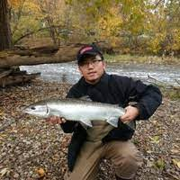

I love Fishn
For as long as I can remember, Ive been fishing. One of my fondest memories out fishn was whenn my brother and I were younger,
my dad dropped us off at the park so we can fish, we started fishing and caught a bluegill.
We decided to use the bluegill as bait with a bobber, cast it out there and we kept fishing.
I saw the bobber go down but I thought it was just the bluegill swimming for its life, but my brother
thought otherwise. He took the pole and started reeling and what do you know,
we had a big bass on the line, reeled it in, was a whopper 22 inch 6lbs bass.
Too bad we did not get a picutre but is a memory that will last a lifetime.
Photos of me Fishn